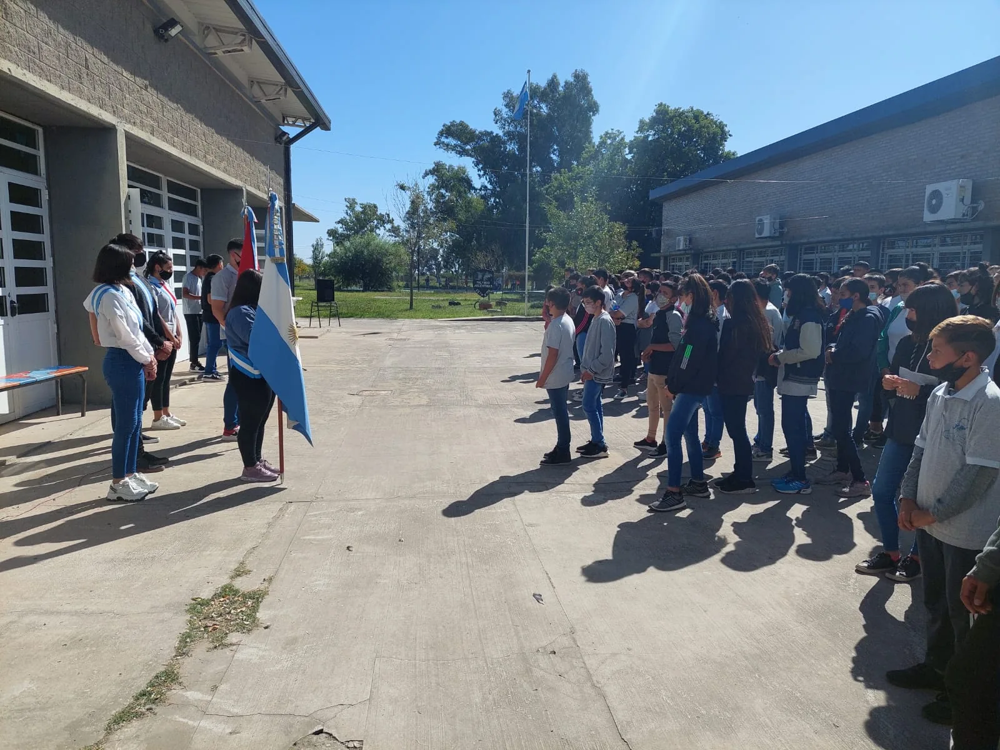
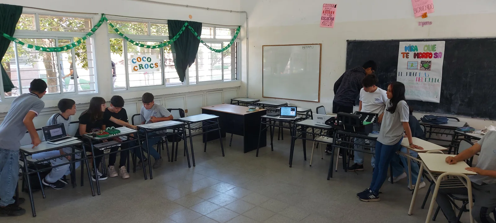
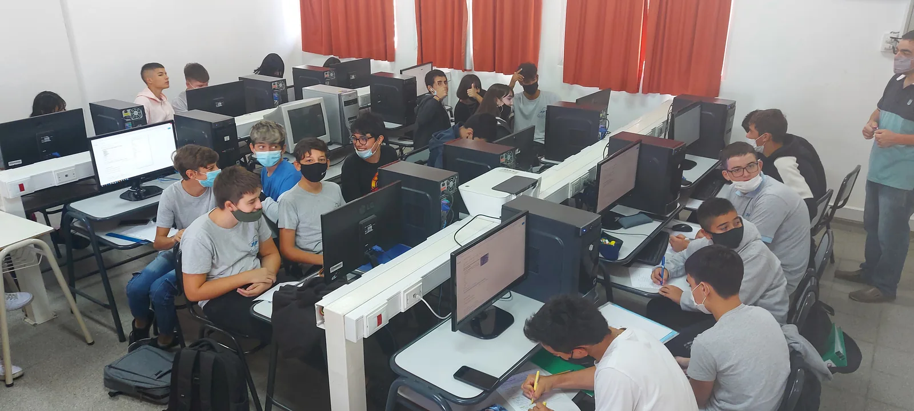

El mes, de un vistazo
Consultá días, meses y detalles de actividades en un calendario de pantalla completa.
Abrir calendario →Una escuela donde la educación, la tecnología y el compromiso con la comunidad se encuentran. Conocé la E.E.T.P. N° 495 "Malvinas Argentinas".

Una navegación más clara para estudiantes, familias, docentes, egresados y toda la comunidad.
Conocé la historia, la identidad, las instalaciones y la comunidad.
Explorar sección →Explorá los seis años y descargá el plan completo en PDF.
Explorar sección →Recorré los meses como un almanaque y consultá actividades.
Explorar sección →Tecnología, talleres y experiencias de aprendizaje.
Explorar sección →Una guía clara para las familias que quieren acercarse.
Explorar sección →Un espacio para compartir la vida institucional.
Explorar sección →

La E.E.T.P. N° 495 nació el 2 de mayo de 2005 y construyó una identidad propia gracias al trabajo de docentes, estudiantes, familias y la comunidad.
Desde el 12 de marzo de 2013 desarrolla sus actividades en su edificio actual, un hito en su trayectoria institucional.
Una propuesta que integra formación general, talleres, programación, hardware, redes, software y prácticas profesionalizantes.
Conocimientos fundamentales para comprender y transformar el mundo.
Proyectos, laboratorios y talleres con desafíos concretos.
Preparación para el trabajo y la continuidad de estudios superiores.
La formación en Informática se nutre de experiencias en laboratorios, talleres y proyectos que conectan conocimientos con desafíos reales.
Queremos que quienes visiten la web puedan conocer no solo lo que se enseña, sino también lo que ocurre cada día en la escuela.
Ver experiencias y proyectos →
Espacios y momentos de nuestra comunidad, con fotografías del sitio actual.
Un acceso rápido al calendario, las novedades y la información para ingresar a la escuela.

Consultá días, meses y detalles de actividades en un calendario de pantalla completa.
Abrir calendario →Un espacio de publicación pensado para mostrar los proyectos y la vida escolar.
Ver novedades →Consultas frecuentes, pasos básicos y espacio para requisitos oficiales.
Conocé más →Canales directos de contacto y la ubicación de nuestra escuela en Rafaela.
Mensajero José Donna 342
Rafaela, Santa Fe
Opciones de acceso a nuestra escuela desde distintos puntos de Rafaela y la región.
La escuela se encuentra aproximadamente a 500 metros al sur de la Terminal de Ómnibus de Rafaela. También podés llegar mediante los servicios interurbanos que operan allí.
Las líneas municipales 1, 2, 3, 4 y 5 del transporte urbano tienen llegada a la Terminal de Ómnibus.
La Línea 3 cuenta con una parada sobre calle Iturraspe, junto al edificio escolar.
Conocé la terminalidad, el plan completo de la Tecnicatura y los espacios de formación de la E.E.T.P. N° 495.